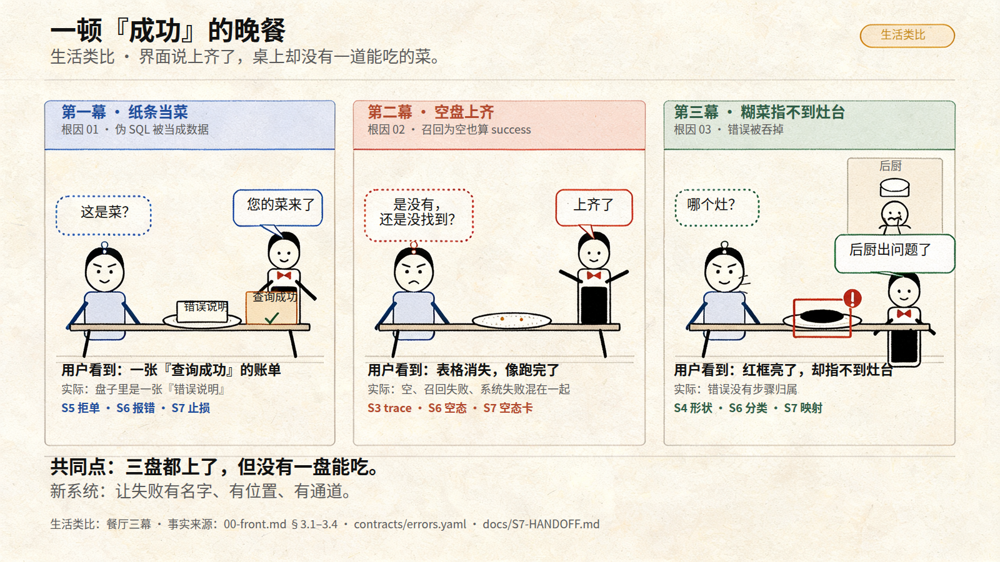
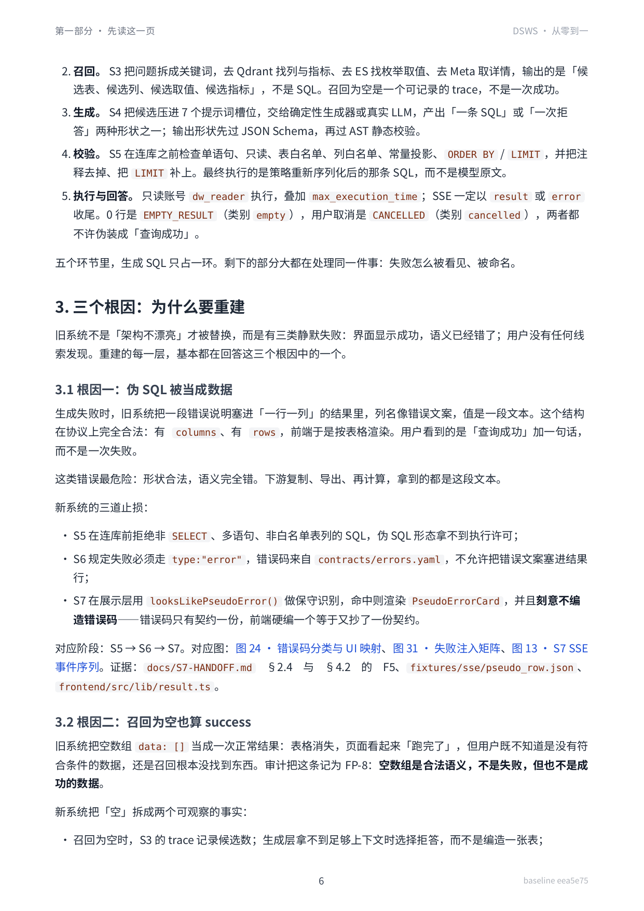
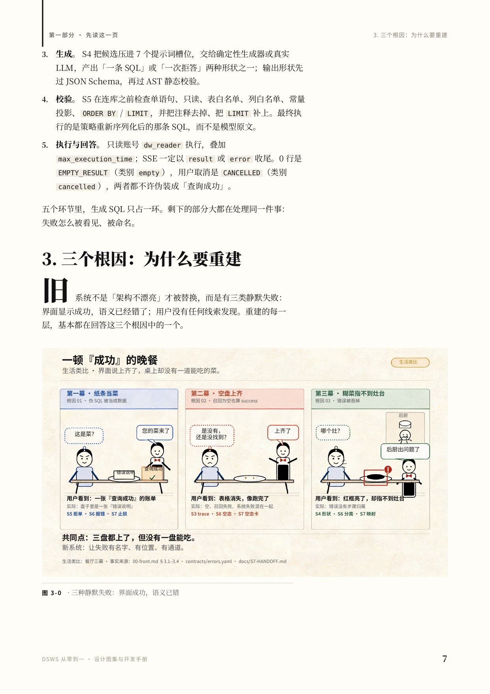

一顿『成功』的晚餐
生活类比 · 界面说上齐了，桌上却没有一道能吃的菜。

改前 / 改后


事实核对
| # | 事实 | 原文摘录 | 出处 | 核对 |
|---|---|---|---|---|
| 1 | 旧系统有三类静默失败：界面显示成功，语义已经错了；用户没有任何线索发现。 | “旧系统不是「架构不漂亮」才被替换，而是有三类静默失败：界面显示成功，语义已经错了；用户没有任何线索发现。” | 00-front.md §3 开头00-front.md:65 | ✅ |
| 2 | 生成失败时，错误说明被塞进一行一列的结果，前端按表格渲染；用户看到「查询成功」加一句话。 | “生成失败时，旧系统把一段错误说明塞进「一行一列」的结果里……用户看到的是「查询成功」加一句话，而不是一次失败。” | 00-front.md §3.1；fixtures/sse/pseudo_row.json；frontend/src/lib/result.ts；docs/S7-HANDOFF.md F500-front.md:69–71; pseudo_row.json; result.ts:103–112; S7-HANDOFF.md:167,193–198,302 | ✅ |
| 3 | 旧系统把空数组 data: [] 当成正常结果；新系统用 EMPTY_RESULT（类别 empty）把「没有数据」和「失败」分开。 | “旧系统把空数组 `data: []` 当成一次正常结果……审计把这条记为 FP-8：空数组是合法语义，不是失败，但也不是成功的数据。” | 00-front.md §3.2；contracts/errors.yaml EMPTY_RESULT；fixtures/sse/empty_rows.json；docs/S7-HANDOFF.md FP-800-front.md:83–90; errors.yaml:70–74; empty_rows.json; S7-HANDOFF.md:26,301 | ✅ |
| 4 | SSE 序列化传 default=str，Decimal("10") 变成字符串 "10"；新系统 _sse() 不传 default=str，未知类型变成 INTERNAL_ERROR。 | “SSE 序列化传了 `default=str`，MySQL 的 `Decimal("10")` 悄悄变成字符串 `"10"`。” | 00-front.md §3.3；backend/app/main.py _sse()00-front.md:98–107; main.py:250–259 | ✅ |
| 5 | 三个根因分别由 S5/S6/S7、S3/S6/S7、S4/S5/S6/S7 承担。 | “伪 SQL 被当成数据 → S5 拒绝 → S6 错误事件 → S7 展示层止损；召回为空也算 success → S3 trace → S6 EMPTY_RESULT → S7 空态卡；错误被吞掉 → S4 形状 → S5 执行 → S6 分类 → S7 映射。” | 00-front.md §3.4 根因与阶段的对应关系表00-front.md:113–117 | ✅ |
门禁
| 门 | 结果 | 证据 |
|---|---|---|
| spelling | pass | spelling_manifest=True; spelling_expected=True; 31/31 manifest strings found in hy4free review; missing=[] |
| layout | pass | layout_text_overlap=True; layout_rect_overlap=True; layout_bounds=True |
| color | manual | no automated check |
| typography | pass | typography_sizes=True; typography_title=True; typography_section=True; typography_label=True; typography_note=True; typography_small=True |
| uniqueness | pass | uniqueness=True |
| style_card | pass | typography_sizes=True |
| teaching_5s | manual | 5 秒读懂：三盘都上了，但没有一盘能吃；每幕底部给出新系统的止损点。 |
| no_figure_needed | manual | 删图门：§3 是 3 个小节 + 1 张表，读者要在脑内把三种失败并排比较；餐厅三幕用同一个故事把三种失败串起来，保留。 |
hy4free 逐字复核
一顿『成功』的晚餐 生活类比 · 界面说上齐了，桌上却没有一道能吃的菜。 生活类比 第一幕 · 纸条当菜 根因 01 · 伪 SQL 被当成数据 这是菜？ 您的菜来了 错误说明 查询成功 用户看到：一张『查询成功』的账单 实际：盘子里是一张『错误说明』 S5 拒单 · S6 报错 · S7 止损 第二幕 · 空盘上齐 根因 02 · 召回为空也算 success 是没有，还是没找到？ 上齐了 用户看到：表格消失，像跑完了 实际：空、召回失败、系统失败混在一起 S3 trace · S6 空态 · S7 空态卡 第三幕 · 糊菜指不到灶台 根因 03 · 错误被吞掉 哪个灶？ 后厨 后厨出问题了 用户看到：红框亮了，却指不到灶台 实际：错误没有步骤归属 S4 形状 · S6 分类 · S7 映射 共同点：三盘都上了，但没有一盘能吃。 新系统：让失败有名字、有位置、有通道。 生活类比：餐厅三幕 · 事实来源：00-front.md § 3.1–3.4 · contracts/errors.yaml · docs/S7-HANDOFF.md